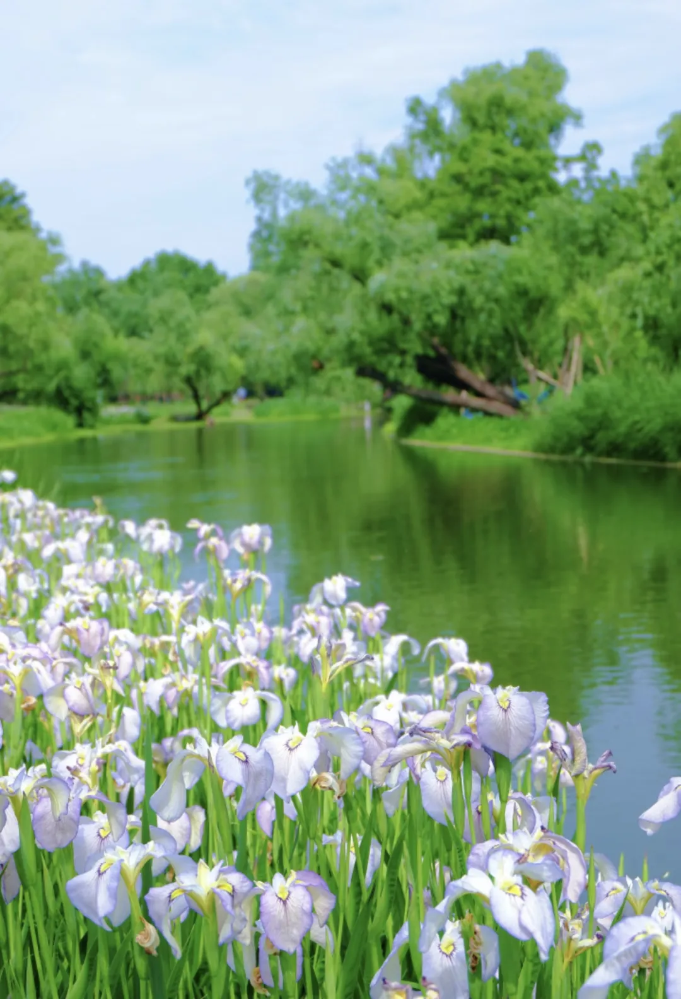
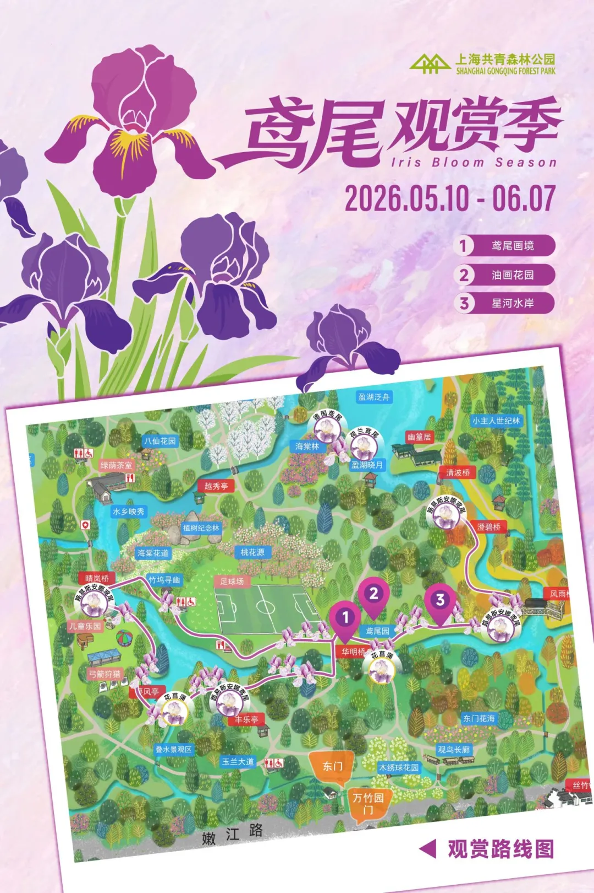
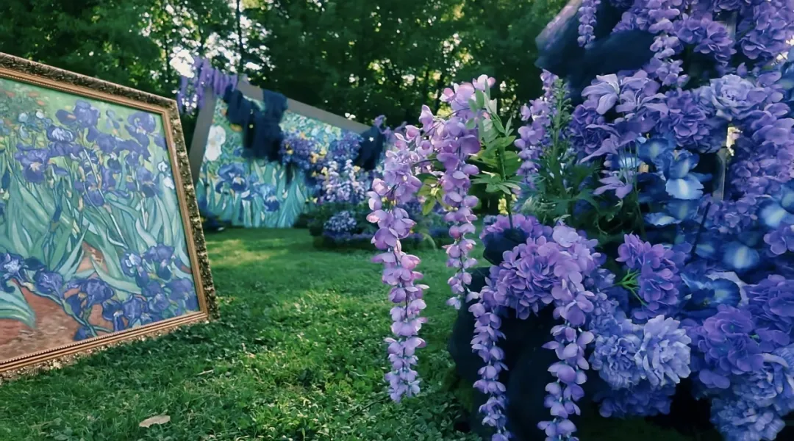
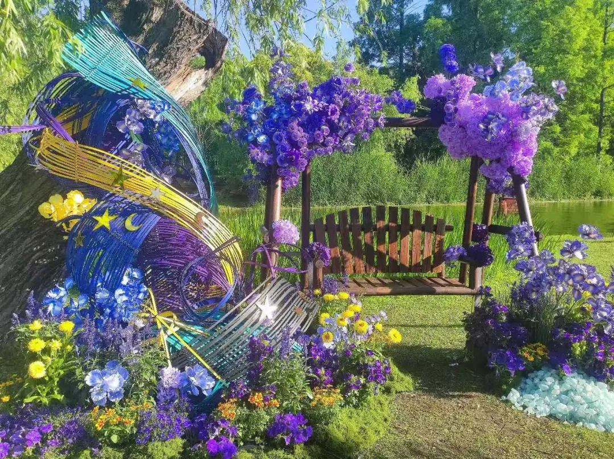
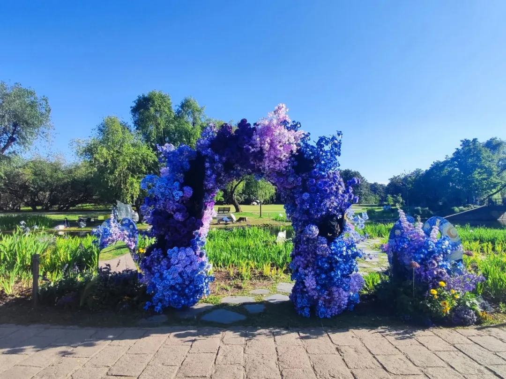
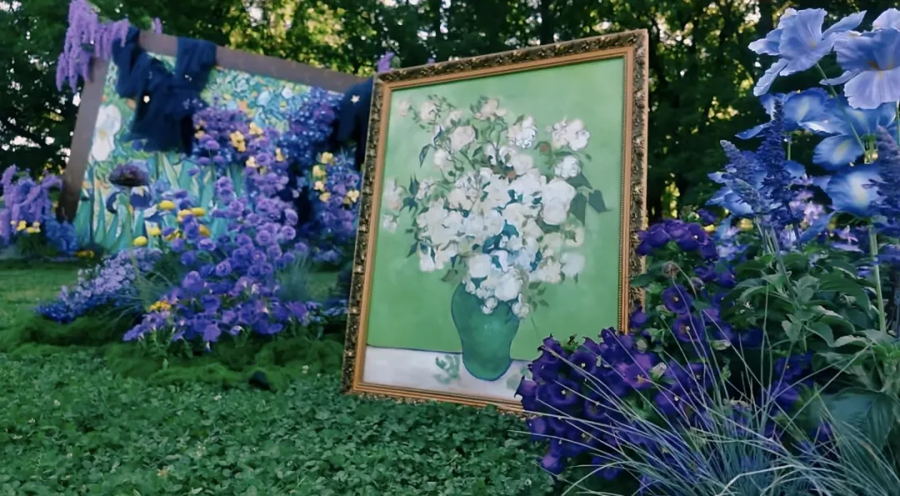
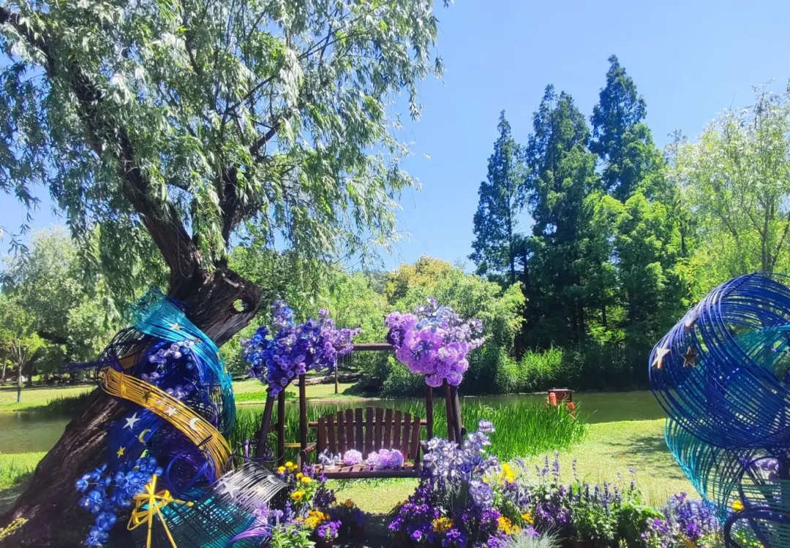
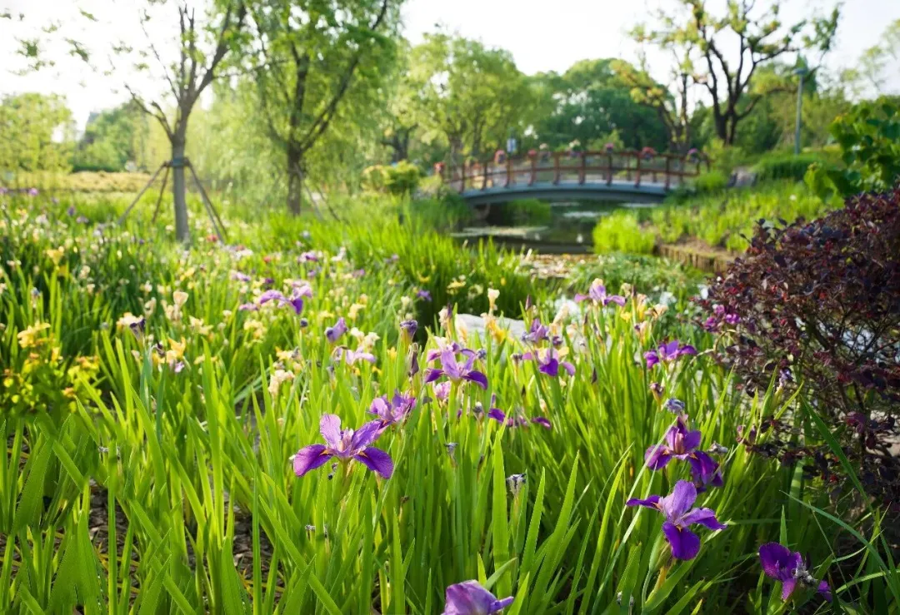
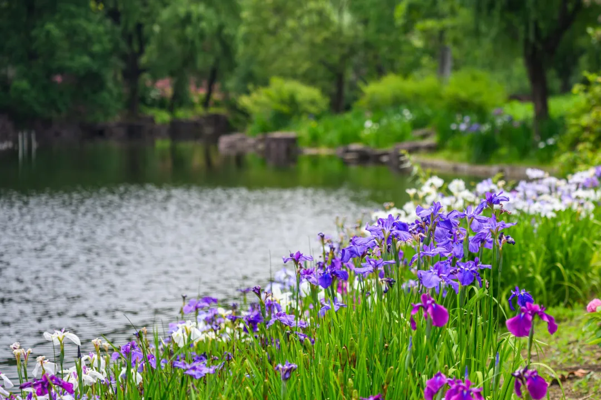

五月追鸢尾：共青怎么逛，顺路还能去哪
事实与景点信息参考：乐游上海相关报道
把「好看」翻译成「你到了门口就知道先往哪走」——下面是一份尽量短、尽量能照做的阅读笔记。
如果你只有 30 秒
- 主战场：共青森林公园东南片，报道中提到的约 5000㎡鸢尾观赏区；赏花季一般报到 6 月 7 日左右（以园方最新公告为准）。入园是否收费、是否需预约，也以当日票务规则为准。
- 一条动线：沿 晴岚桥—清波桥走环线，省回头路。
- 想换口味：同月还有上植、滨江、世博文化公园、辰山等鸢尾看点，文末直接抄地址与截止日。

一、共青森林公园：先把「在哪、看什么」说死
共青这波鸢尾季，园方定的主题是「星夜鸢尾・镜像森境」——你可以把它理解成：水边倒影 + 偏蓝紫粉的花色 + 少量艺术装置，适合拍照，也适合慢慢走。
品种层面，原文提到园内有路易斯安娜鸢尾、花菖蒲、荷兰鸢尾、西伯利亚鸢尾、德国鸢尾等，合计近 50 个品种，色系覆盖蓝、白、紫、粉、黄。对普通游客来说，记住「颜色会分段」就够了：找光线柔和的上午或傍晚，比死记拉丁名更实在。
地址：杨浦区军工路 2000 号。
盛花进度别背锅：花期受气温和雨水影响，「几成开」天天变。出发前扫一眼公园官方账号或门口告示；若略过峰，反而能拍到层次更干净的花带。

建议你按这条环线走
鸢尾集中区在公园东南，沿晴岚桥至清波桥形成游览环线。实操上：入园后优先打开电子地图搜这两座桥，比跟着感觉绕圈省很多步数。


二、三个打卡点：名字很文艺，你只需记住「适合拍什么」
鸢尾画境
入口门户有高约 2.5 米的主题花艺拱门；拱门两侧有印象派「调色盘」类装置。这里适合站拱门侧面三分法，避免正面堵路，也避免游客后脑勺入镜。

油画花园
灵感来自梵高《鸢尾花》：大型油画框景 + 屏风、座椅、展板，强调「能坐能逛」而不只是围观。带娃或带长辈，这里更适合坐下来休息 + 补一张互动照。

星河水岸
水岸两侧有竹篾造景，地面有水晶石折射光斑，和水面倒影一起拍。原文提到有秋千——这类点位周末会排队，想拍干净画面尽量工作日或刚开园。

三、活动信息：别空跑，先确认「有没有场次」
赏花季期间，公园会安排鸢尾主题花艺活动、鸢尾主题自然笔记活动等科普类活动。这类活动常有材料费、人数上限、报名渠道，推文里写不全，最稳妥是：关注共青森林公园官方发布，或到游客中心问当日排期。
四、同一季，上海还有这些鸢尾点可顺路排
下面不堆形容词，只保留「你去之前真正要抄的」：地址 + 亮点 + 原文提到的活动期限（若有）。门票与服务以各园当日公示为准。
上海植物园
徐汇区龙吴路 1111 号

滨江森林公园
浦东新区高桥镇凌桥崇景路 10 号

世博文化公园
浦东新区济坤路 100 号辰山植物园
松江区辰花公路 3888 号
五、小编只啰嗦三件小事
- 鞋：水边与草地露水未干时易滑，平底防滑比出片更重要。
- 包：轻量水 + 小零食即可，赏花区垃圾桶间隔不一，垃圾自己带走更省心。
- 错峰：共青与热门园周末中午人流高，要么赶早入园，要么傍晚光线更柔。
转载与署名请仍遵循原作者及园方要求；出行前务必核对各园开放时间与预约政策。